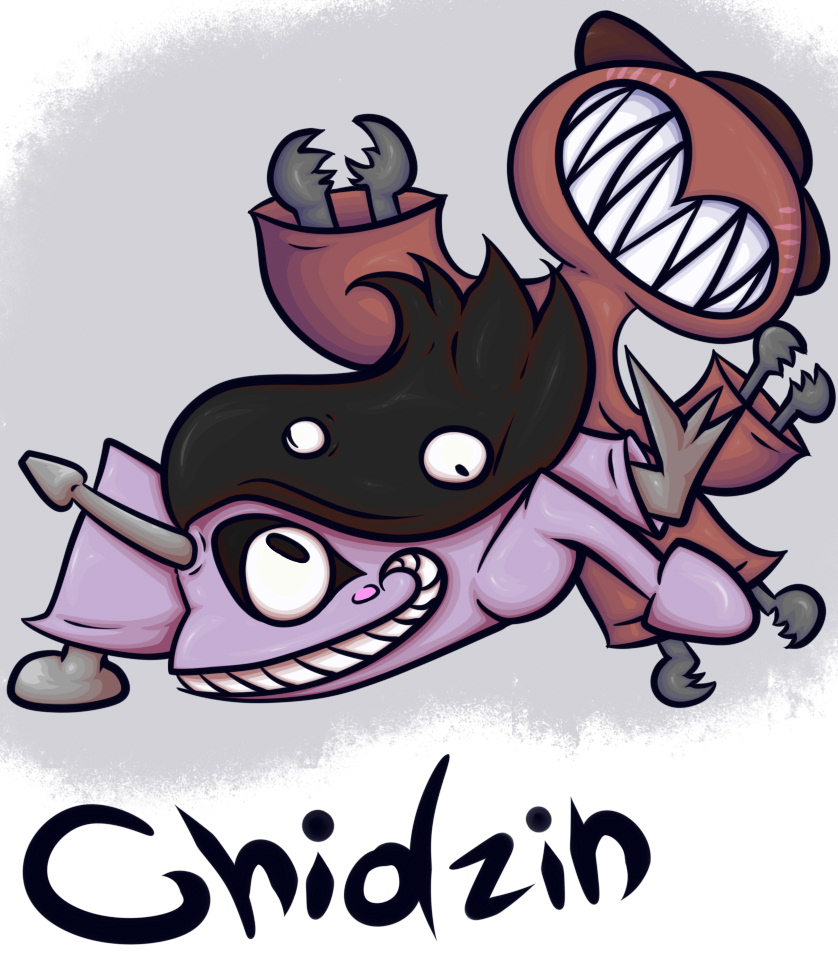

Chidzin are Natura Malormes Quadrias from the Vanished Age. Malformed and mindless, they roam in large numbers across the moorlands of the Prime Continent.
Male Chidzin are small, slim, quadrupedal pink creatures. They possess a large, sharp mouth with edges that curl or swirl at the tips, a grey horn protruding from the forehead, and two large eyes marked by black streaks above and below. Long black hair extends from their bodies, from which numerous small eyes emerge. Their limbs end in pallete-shaped tips, sometimes emerging from skin-like sleeves, in which case the tips appear grey in color.
Female Chidzin are small red creatures that lack eyes. They have a voluminous head featuring a large mouth filled with sharp fangs, with brown protrusions on top. Their bodies are supported by four large tentacles, each ending in skin-like sleeves from which grey, sharp claws extend.
Chidzin are heavily malformed creatures descended from Ila. Over generations, due to extreme lack of genetic diversity, they degenerated significantly, eventually losing all higher consciousness and becoming entirely mindless.
Aside from gender differences, Chidzin are nearly identical at the moment of gestation. However, the bodies of the mothers offer little protection to developing embryos. External radiation and physical disturbances affect development, causing severe malformations before birth. As a result, individuals may emerge with excessive flesh growths, irregular anatomy, inconsistent numbers of eyes, and other mutations.
Chidzin exhibits strong sexual dimorphism. Males are faster, move erratically, and possess more developed senses such as smell and vision. Females are slower and move by crawling with their tentacles, but they are more adept at grasping objects and tearing them apart.
Their skeletal structure often breaks through their limbs, forming sharp claws and pallete-like extensions that they use to attack and tear into their prey.
Chidzin roam the moorlands in search of food. They are capable of consuming almost anything, as their stomachs are among the few consistently functional organs in their bodies, producing a powerful acid that rapidly processes ingested material. Despite this, they show a strong preference for meat, whether fresh or decayed. They typically attack in large groups, swarming and overwhelming targets by biting and stabbing until they can devour them.
Internally, Chidzin anatomy is highly disorganized, with organs and nerves irregularly distributed and often poorly functioning. Despite this, and despite long-standing assumptions that they should be near extinction due to both their instability and lack of genetic diversity, Chidzin populations persist in large numbers. The reason for this resilience remains unknown.
They reproduce in large numbers at any given time. Females can gestate up to five offspring simultaneously. Although approximately 34% of offspring die before or shortly after birth, the species maintains a high population. While their ancestral species, the Ila, reproduced by laying eggs, Chidzin have developed internal gestation. Embryos grow within the lower body and tentacles of the female before being born through openings in the protrusions on the head, which separate to release the offspring.
The only significant difference between newborn and mature Chidzin is size. They grow rapidly over the course of a few weeks until reaching full maturity. This growth accelerates with increased meat consumption and is further enhanced when individuals are part of large groups. Isolated Chidzin develop more slowly, sometimes requiring several months to reach full size.
When not actively roaming or behaving erratically, Chidzin resides underground. They dig burrows in soil or cavities, or occupy existing holes, often burying themselves completely. Males are more likely to excavate their own burrows, while females tend to occupy existing spaces before creating new ones if necessary.
It is believed that the widespread environmental degradation and irregular terrain of the Vanished Age are partially the result of Chidzin activity, as they continuously create burrows and destabilize the land.
Chidzin behavior and physical instability frequently result in casualties within their own populations. Common causes of death include falling from heights, colliding with terrain, fighting among themselves, and organ failure. Despite these factors, their groups remain cohesive and do not disperse, even when their erratic behavior leads to large internal conflict.
Chidzin are widely feared by the inhabitants of the Vanished Age, regarded as destructive pests that consume everything in their path. However, they can be managed under certain conditions. Attacking from elevated positions allows individuals to eliminate them gradually. While small numbers pose limited threat, large groups—especially when ambushing—can be extremely dangerous.

Branch: Natura
Category: Malormes
Subcategory: Quadrias
Etymology: ---
Sex Ratio: 50% Male/50% Female
Sapience: ---